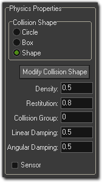
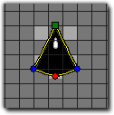

Tutorial
Page 3 of 7
Creating a Fixture
Create a new object and call that object "obj_Player" and give it your new sprite. In the object properties you will see that there is a checkbox labelled Uses Physics. You
should check that now and it will open up a new section of the object editor for the Physical Properties of your player ship.

We are going to give the ship a simple custom shape so click on the "Shape" selection for the Collision Shape and then click on the Modify Collision Shape button.
This will open up the fixture editor, which is very similar to the standard path editor available to you. In this editor you use left click in a n empty space to add a point, left click and drag on
an existing point to move it, and right click to delete a point. You can also zoom using the mouse wheel, hold the middle mouse button to drag the view, or change the grid resolution to make
adding points easier.
When creating a fixture, note that you want to keep the number of points as low as possible (with a minimum of three being necessary for creating the fixture) and, as mentioned previously,
you need to keep the shape convex. Once you have created your fixture in this editor it should look something like this:

Click on "Okay" to take you back to the object properties so we can now set the rest of the physical properties of the object. Let's take a quick look at what they are and what they
do when applied to our new physics fixture:
- Density : The density is basically "how many molecules are packed into the fixture". Think of a box full of feathers, and a box full of books... they both look the same size
but the one with the feathers is less dense (and so has less mass) than the one with the books. So, changing this will affect the overall mass of our fixture. For our ship we will keep it
low so that it is quick and responsive to the player with a value of 0.15.
- Restitution : This is how "bouncy" our fixture is. A high restitution means that it will bounce a lot when in a collision, and a low restitution means it will only bounce a little. For
our ship, a value of 0.5 should be perfect.
- Collision Group : Here you can group fixtures together into groups, with the default group being 0. If you have two or more fixtures with a negative collision group, these
fixtures will never collide, even if they have a collision event! if you assign two or more fixtures to a positive collision group, then they will always collide, whether they
have a collision event or not. the default is 0, which means that they will collide if they have a collision event, and we will leave it like that for this game. NOTE : Using collision groups is
a processor heavy task and should only be used when absolutely necessary!
- Linear Damping : When you throw something, it doesn't keep going forever as the friction against the air slows it down and eventually stops it (and gravity too, but that's another
story!). Linear damping does the same thing to our fixture, giving it a kind of "drag" or "friction" in the world. For our ship, we will set this to 0.5 as we want it to slow down quickly.
- Angular Damping : The same as the above, only for rotation. If this is set to 0, any bump or movement that affects the angular rotation of the fixture will continue infinitely. For
our ship we will set this to 0.5 too, so that it is responsive to the player commands.
You should note that all the above properties will behave differently depending on the mass of your fixture. The mass is calculated automatically for you, based on the size (surface area) of the
fixture and the density.
Once you have filled in the necessary values for your player ship, we are almost ready to test it in a room and see how it moves and handles!
Click on the Next button to go to the next page of the tutorial.